CRTP - Certified Red Team Professional
Enumeration
In this session we will be looking on how to do enumeration in an AD environment. This Domain enumeration phase will be conducted 100% via Powershell.
For Domain enumeration, we do have so far, 4 ways to accomplish this task.
The Active Directory PowerShell module.
Based on Microsoft, the Active Directory module for Windows PowerShell is a PowerShell module that consolidates a group of cmdlets. You can use these cmdlets to manage your Active Directory domains, Active Directory Lightweight Directory Services (AD LDS) configuration sets, and Active Directory Database Mounting Tool instances in a single, self-contained package.
BloodHound
BloodHound uses graph theory to reveal the hidden and often unintended relationships within an Active Directory or Azure environment. Attackers can use BloodHound to easily identify highly complex attack paths that would otherwise be impossible to quickly identify. Defenders can use BloodHound to identify and eliminate those same attack paths. Both blue and red teams can use BloodHound to easily gain a deeper understanding of privilege relationships in an Active Directory or Azure environment.
PowerView(PowerShell)
PowerView is a PowerShell tool to gain network situational awareness on Windows domains. It contains a set of pure-PowerShell replacements for various windows "net *" commands, which utilize PowerShell AD hooks and underlying Win32 API functions to perform useful Windows domain functionality.
https://github.com/PowerShellMafia/PowerSploit/blob/dev/Recon/PowerView.ps1
SharpView
SharpView is a .NET port of one of our favorite tools PowerView. SharpView offers the ability to use any of the PowerView functions and arguments in a .NET assembly.
If you’re familiar with PowerView, SharpView will be easy to pick up.
I like to say that SharpView is PowerView with Steroids 😄.
https://github.com/tevora-threat/SharpView
Enough is Enough… After all this reading, let’s now see how everything works by practicing enumeration in Active Directory. We will focused this enumeration using PowerView Module.
Well, Assuming that we already have access to a valid user in an Active Domain environment, we won’t be doing Recon’s like enumerating the network or trying to compromise a user.
Notice once again that from this phase we already have a valid user and we will carry on from here.
PowerShell Detection Bypass
Previously we discussed a little bit about 4 PowerShell Detection mechanisms, now we will discuss few ways to bypass these mechanisms and try to be stealthy while doing our domain enumeration phase.
Invisi-Shell
Using Invisi-Shell is a .bat script that will hide your powershell script in plain sight! Invisi-Shell bypasses all of Powershell security features (ScriptBlock logging, Module logging, Transcription, AMSI) by hooking .Net assemblies.
The hook is performed via CLR Profiler API.
It’s always good that we do run Invisi-Shell via cmd before we start doing our enumeration and right after script execution, Powershell will be executed. This script should be executed depending on the type of privilege we do have on the machine.
If we are just a simple low level privileged user, then we should run RunWithRegistetyNonAdmin.bat.
If we are a high level privileged user like Administrator for example, then we should run RunWithPathAsAdmin.bat.
RunWithRegistetyNonAdmin.bat

As you can see the output after Invisi-Shell execution, we don’t need to worry about Powershell Detections anymore and PowerShell is called right after.
Now we can import the PowerView modules. For this importing mechanism we do have 2 ways to import modules.
First option is using a dot sourcing mechanism.
. .\PowerView.ps1
Second option is using Import-Module.
Import-Module PowerView.ps1
PowerView
PowerView is a PowerShell script used in security testing to discover and exploit vulnerabilities in Windows Active Directory environments. It helps with tasks like finding Active Directory objects (users, groups, computers), analyzing Group Policy Objects, identifying privileged accounts, exploring trust relationships, detecting ACL misconfigurations, and mapping out the Active Directory topology. This tool is popular among penetration testers and red team operators for simulating attacks and assessing security weaknesses. It should be used responsibly and with proper authorization in controlled environments.
Let’s start by importing PowerView.ps1 Modules then using it to enumerate users, computers, Domain Administrators and Enterprise Administrators as well.
Import-Module .\PowerView.ps1
Users, Computers and Groups Enumeration
We can use the module Get-DomainUser to Enumerate Domain Users when using PowerView.
Get-DomainUser
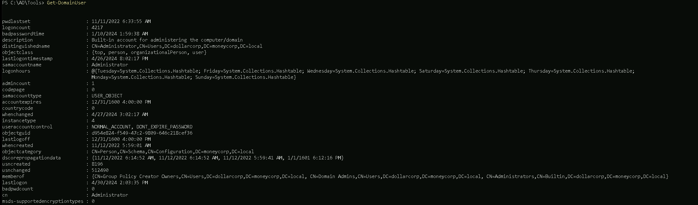
The Command Above will get all the domain users. Note this can really be painful when we are dealing with an AD, because we may have millions of users accounts.
It’s always good if we use filters to bring us only the real relevant information in the output. we can use the select-object (or its alias select) cmdlet.
Let’s imagine we want to bring only the property samaccountname, which will brings us only account usernames.
Get-DomainUSer | select -ExpandProperty samaccountname
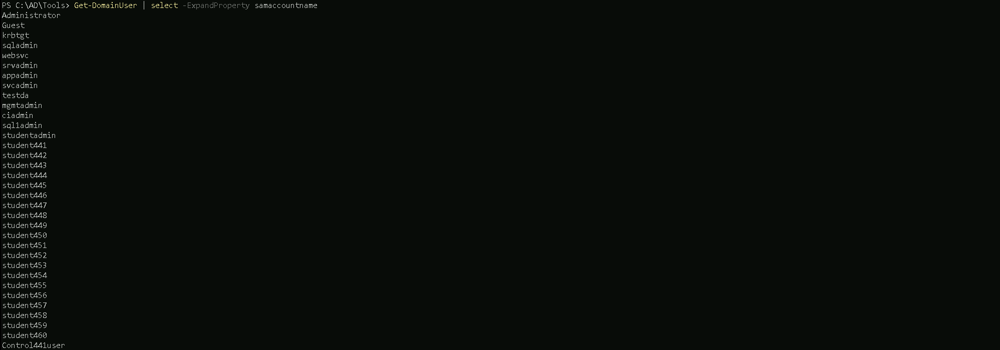
After filtering to bring us only samaccountname, we can see that we have all the AD usernames on our output.
Domain Computers
Now, to enumerate member computers in the domain we can use Get-DomainComputer module.
Get-DomainComputer
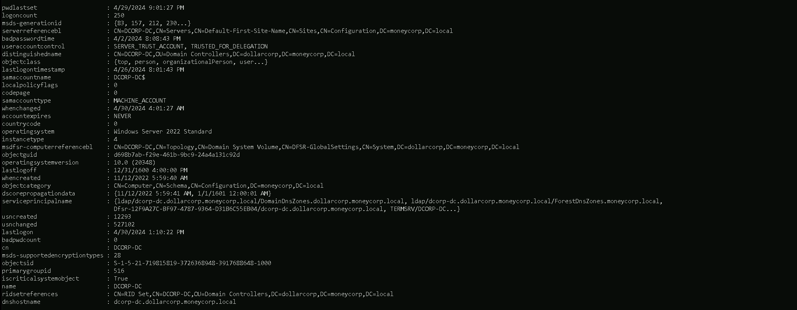
Above command helps us to request all the computers we have in the domain.
We can filter this as well by using the same we did when enumerating users.
Get-DomainComputer | select -ExpandProperty dnshostname

The screenshot above shows us all the computers that we do have in the account so far by bringing us all the computer names.
Domain Groups
Our next move will be checking all the domain groups and find out all the domain groups we have in this domain. We can use the following command.
Get-DomainGroup
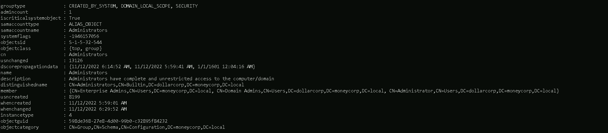
Once we issue the command, we get all the groups available in this domain including all its properties.
We can as well once again filter it and bring group names only.
Get-DomainGroup | select -ExpandProperty name
Then We can get information of one specific group instead of bringing all the groups information by specifying the group identity.
Get-DomainGroup -Identity "Domain admins"
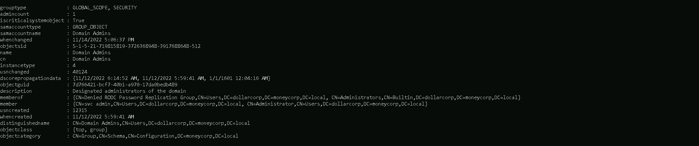
Domain Admin Members
Another good thing to check when enumerating users inside a domain, is to check what users are member of Domain Admins group.
Get-DomainGroupMember -Identity "Domain Admins"
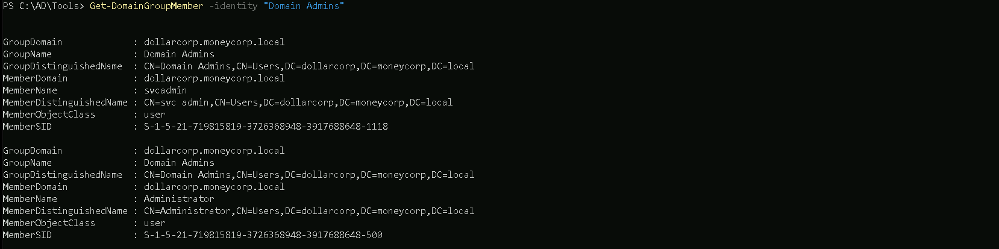
The command issued above will bring us all the domain accounts belonging to the Domain Admins group plus other properties.
The other thing we can do as well is to filter by MemberName property, this way we will get only all the domain accounts belonging to Domain Admins groups.
Get-DomainGroupMember -Identity "Domain Admins" | select -ExpandProperty MemberName

We can see above that we do have only users svcadmin and Adminisrator as part of Domain Admins group.
Enterprise Admins
Another option is to enumerate Enterprise admins group members.
Get-DomainGroupMember -Identity "Enterprise Admins"
If this is not a root domain, the above command will return nothing. We need to query the root domain as Enterprise Admins group is present only in the root of a forest.
Get-DomainGroupMember -Identity "Enterprise Admins" -Domain moneycorp.local

We can see above that, only Administrator is part of Enterprise Admins group.
Active Directory module (ADModule)
ADModule is a Microsoft signed DLL for the ActiveDirectory PowerShell module. Just a backup for the Microsoft's ActiveDirectory PowerShell module from Server 2016 with RSAT and module installed.
Also there are many benefits like very low chances of detection by AV, very wide coverage by cmdlets, good filters for cmdlets, signed by Microsoft etc.
The most useful one, however, is that this module works flawlessly from PowerShell's Constrained Language Mode.
To be able to list all the cmdlets in the module, import the module as well. Remember to import the DLL first.
Import-Module C:\ADModule\Microsoft.ActiveDirectory.Management.dll
Import-Module C\ADModule\ActiveDirectory\ActiveDirectory.psd1
After importing ADModule, we can start by enumerating users.
Enumerate Users
Get-ADUser -Filter *
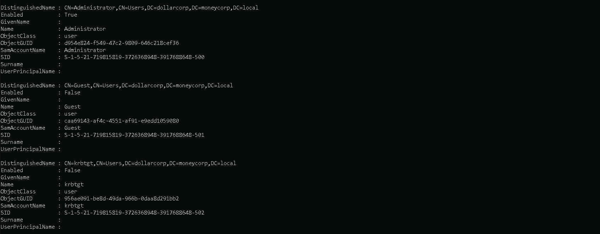
We can list specific properties. Let's list samaccountname and description for the users.
Note that we are listing all the properties first using the -Properties parameter.
Get-ADUser -Filter * -properties * | select SamAccountName,Description
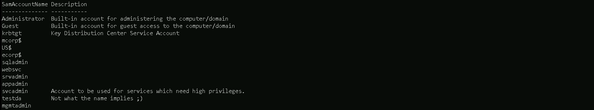
Enumerate computers
The Following command will show us all the computers we do have on the Domain, including its properties.
Get-ADComputer -Filter *
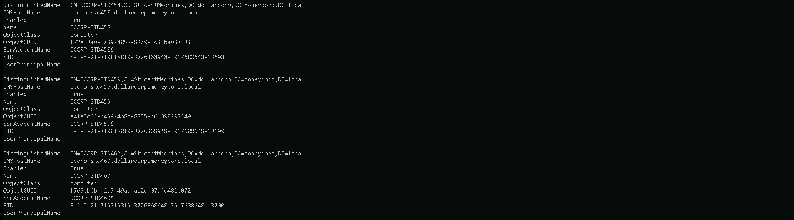
By using some filters we can bring only the properties we want to, for example on the command below, we will only bring all properties but using select to specify only want we want, in our case, the properties DNSHostName and its Description.
Get-ADComputer -Filter * -properties * | select DNSHostName,Discription

Domain Groups
ADModule can also identify all the Domain groups and its properties using the following command.
Get-ADGroup -Filter *

We can also filter this by bringing us only the domain group names instead of all its properties.
For the following query, we will be filtering the query to bring us only the property Name and its Description.
Get-ADGroup -Filter * -properties * | select Name,Description
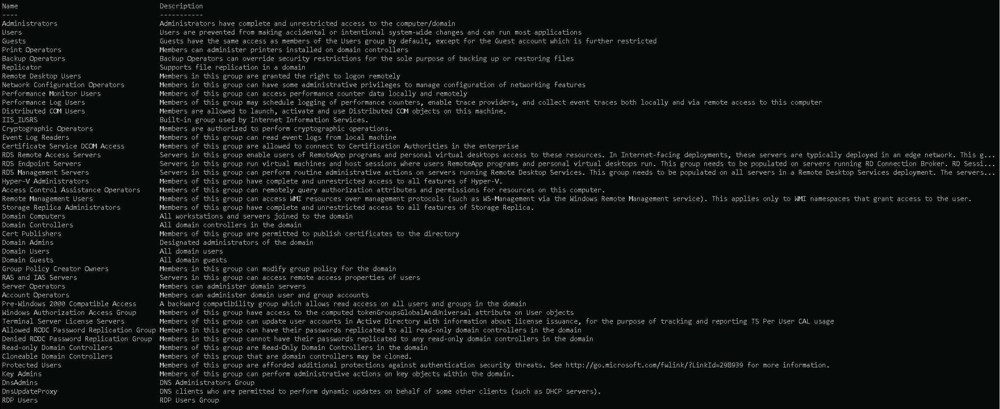
Domain Group Members
Let’s say that we already know all the groups we have in the domain, but now we want to know what users are part of a specific group, like Domain Admins group for example.
Below we can see all user’s that are member of a specific groups, in this case Domain Admins Group Members.
Get-ADGroupMember -Indentity "Domain Admins"
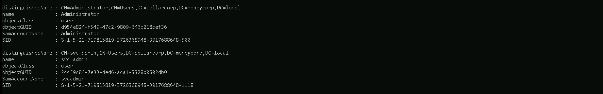
We can also filter it by bringing us only the SamAccountName property for all the Domain Admins group.
Get-ADGroupMember -Identity "Domain Admins" | select SamAccountName,Description

Enterprise Domains Group Members
The following command will only work if we are in a root domain in this case in parent domain, otherwise it won’t work at all, then Its better if we specify the domain itself to see what users are part of Enterprise Domains group.
Get-ADGroupMember -Identify "Enterprise Domains" -Server moneycorp.local

OUs & GPOs Enumeration
Enumerating Organization Units (OUs) and Group Policy Objects (GPOs) during a penetration test provides several key benefits for assessing and exploiting Active Directory environments effectively:
Benefits of Enumerating OUs:
1. Understanding Organizational Structure:
1. Targeted Reconnaissance:
1. User and Group Enumeration:
1. Mapping Attack Surfaces:
Benefits of Enumerating GPOs:
1. Policy Assessment:
1. Identifying Security Weaknesses:
1. Audit and Compliance:
1. Exploitation Opportunities:
Overall Pentesting Benefits:
In summary, enumerating OUs and GPOs during a penetration test enhances the effectiveness of reconnaissance, risk assessment, and exploitation activities within Active Directory environments, leading to more comprehensive security assessments and actionable findings for improving overall security posture.
For the practical demonstration, several types of OUs and GPOs enumerations will showed here and We will be using PowerView.
Let’s start by importing PowerView modules.
Import-Module .\PowerView.ps1
OUs(Organization Units) Enumeration
Let’s start by querying all Organization Units in the target domain with the following Command
Get-DomainOU

Above we can see all Organization Units configured in this Domain, containing all the properties as well.
But we can also make the same request and filter to bring only the properties that import the most to us.
For example we will use the property name to bring us only the name of all OUs in this domain, this way we see OU names only.
Get-DomainOU | select -ExpandProperty name
Above we can see that we do have 4 Organization Units configured for the target domain.
As it’s known, inside a Organization Unit we do have some computers assigned to it. Let’s use OU StudentMachines as an example and find out, what Computers are assigned to this OU.
(Get-DomainOU -Identity StudentMachines).DistinguishedName | %{Get-DomainComputer -SearchBase $_} | select name

We can see that we were able to find out all the computers that are assigned to the StudentMachines OU.
GPOs(Group Policy Objects) Enumeration
We will focus now on GPO enumeration, also using PowerView modules.
Get-DomainGPO

ACL(Access Control List) Enumeration
Access privileges for resources in Active Directory Domain Services are usually granted through the use of an Access Control Entry (ACE). Access Control Entries describe the allowed and denied permissions for a principal (e.g. user, computer account) in Active Directory against a securable object (user, group, computer, container, organizational unit (OU), GPO and so on).
Enumerating Access Control Lists (ACLs) during an Active Directory penetration test offers several benefits and can be instrumental in identifying security weaknesses and potential attack paths. Here are the benefits along with a use case illustrating the importance of ACL enumeration:
Benefits of ACL Enumeration:
1. Identifying Security Misconfigurations:
1. Understanding Access Controls:
1. Mapping Attack Surfaces:
1. Detection of Overly Permissive Settings:
Use Case: ACL Enumeration in Active Directory Pentesting
Scenario:
During a penetration test of an Active Directory environment, the pentester is tasked with assessing the security posture of a domain controller and identifying potential avenues for privilege escalation.
Steps:
1. Enumerate Directory Objects:
1. Retrieve ACL Information:
1. Identify Misconfigured Permissions:
1. Assess Privilege Escalation Opportunities:
1. Document Findings and Recommendations:
Benefits:
In summary, ACL enumeration is a critical aspect of Active Directory pentesting, offering valuable insights into security misconfigurations, access control issues, and opportunities for privilege escalation. Properly conducted ACL assessment contributes to a thorough security assessment and helps organizations enhance their defensive capabilities.
If an object's (called objectA) DACL features an ACE stating that another object (called objectB) has a specific right (e.g. GenericAll) over it (i.e. over objectA), attackers need to be in control of objectB to take control of objectA.
There are 2 types of ACLs in Active Directory
Discretionary Access Control List (DACL):
This type of ACL defines the access rights assigned to an entity over an object. It specifies the access that is explicitly allowed by the Access Control Entries (ACEs) in the DACL. If an object has a DACL, the
system allows access based on the permissions granted in the DACL. If the DACL has ACEs that allow access to specific users or groups, access is implicitly.
System Access Control List (SACL):
This type of ACL generates audit reports that detail which entity attempted to gain access to an object, whether access was granted or denied, and the type of access provided. The SACL is crucial for auditing and monitoring access attempts within the Active Directory environment.
For this ACL enumeration, PowerView will be used. Once PowerView modules has been imported, Let’s start the enumeration.
To enumerate ACLs, we can use Get-DomainObjectACL.
Let’s enumerate the Access Control List for the Domain Admins group.
Get-DomainObjectACL -Identity "Domain Admins" -ResolveGUIDs -Verbose
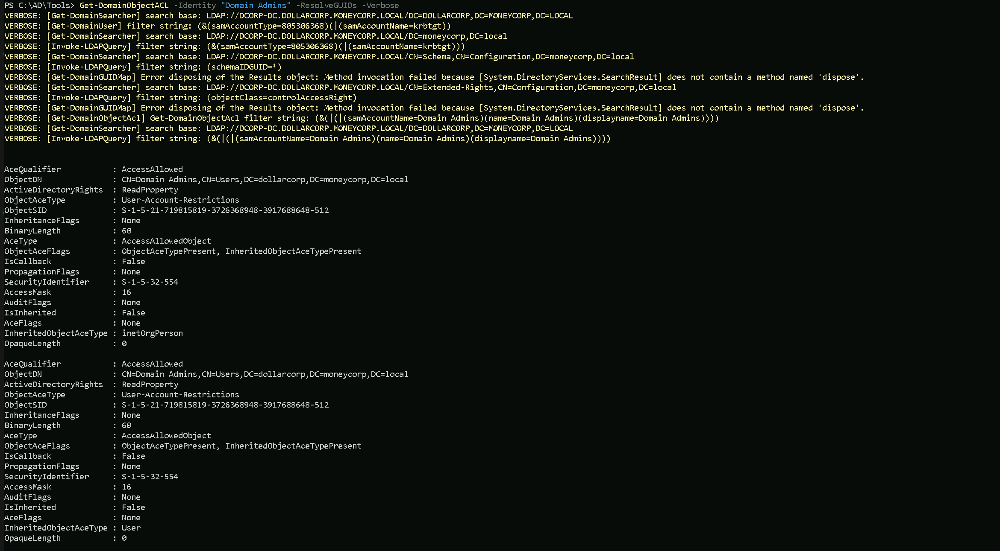
Domain, Forest & Trusts Enumeration
Enumerating domains, forests, and trusts during a penetration test provides several key benefits for assessing and understanding the Active Directory (AD) environment thoroughly. Here are the benefits of each enumeration:
Domain Enumeration:
1. Understanding Domain Structure:
1. Identifying Domain Admins and Critical Groups:
1. User and Group Enumeration:
1. Mapping Trust Relationships:
Forest Enumeration:
1. Assessing Forest Topology:
1. Identifying Trust Relationships Between Forests:
1. Analyzing Global Catalog Servers:
Trusts Enumeration:
1. Mapping Trust Relationships:
1. Identifying External Trusts:
1. Assessing Trust Authentication Levels:
Let’s start by enumerating all the domains in a forest and for that we will use PowerView modules. If PowerView module has been imported, then we can carry on with our enumeration.
Domains Enumeration
The following command will enumerate all the domains we have in this current forest.
Get-ForestDomain -Verbose

As we can see above, all the domains in the current forest are listed to us. For a better and cleaning view, we can simply filter it and get the property name.
The following command brings us the name of all 3 Domains we do have in this forest. Keep in mind that the command below will only show us domains within forest, no external domains will be shown here.
Get-ForestDomain | select -ExpandProperty Name

The above command brings us the name of all 3 Domains we do have in this forest.
moneycorp.local
dollarcorp.moneycorp.local
us.dollarcorp.moneycorp.local
Now we can also enumerate and map all the Trusts domain dollarcorp.moneycorp.local contains.
Get-DomainTrust

We can see above that we are checking all the trusts that we do have in the current domain(dollarcorp.moneycorp.local). Above it’s possible to see that we do have 1 type of trust and 2 types of Attributions, which are:
Trusts
UPLEVEL (0x00000002) - A trusted Windows domain that is running Active Directory.This is output as WINDOWS_ACTIVE_DIRECTORY in PowerView for those not as familiar with the terminology.
Attributions
WITHIN_FOREST (0x00000020) — the trusted domain is within the same forest, meaning a parent->child or cross-link relationship
QUARANTINED_DOMAIN (0x00000004) — SID filtering is enabled (more on this later). Output as FILTER_SIDS with PowerView for simplicity.
There are several types of trusts, some of which have various offensive implications, covered in a bit:
TrustType:
TrustAttributes:
According to this post it means that the selective authentication security protection is enabled. For more information, check out this MSDN doc.
The trusting domain allows SIDs that are local to its forest to come over a PrivilegedIdentityManagement trust.”
Trusts can be one-way or two-way. A bidirectional (two-way) trust is actually just two one-way trusts. A one-way trust means users and computers in a trusted domain can potentially access resources in another trusting domain. A one-way trust is in one direction only, hence the name. Users and computers in the trusting domain can not access resources in the trusted domain.
Microsoft has a nice diagram to visualize this:
One-Way Trust
A one-way trust is a unidirectional authentication path created between two domains (trust flows in one direction, and access flows in the other).
This means that in a one-way trust between a trusted domain and a trusting domain, users or computers in the trusted domain can access resources in the trusting domain. However, users in the trusting domain cannot access resources in the trusted domain. Some one-way trusts can be either nontransitive or transitive, depending on the type of trust being created.
Two-Way Trust
A two-way trust can be thought of as a combination of two, opposite-facing one-way trusts, so that, the trusting and trusted domains both trust each other (trust and access flow in both directions). This means that authentication requests can be passed between the two domains in both directions. Some two-way relationships can be either nontransitive or transitive depending on the type of trust being created. All domain trusts in an Active Directory forest are two-way, transitive trusts. When a new child domain is created, a two-way, transitive trust is automatically created between the new child domain and the parent domain.
Trust Transitivity
Transitivity determines whether a trust can be extended beyond the two domains between which it was formed. A transitive trust extends trust relationships to other domains; a nontransitive trust does not extend trust relationships to other domains. Each time you create a new domain in a forest, a two-way, transitive trust relationship is automatically created between the new domain and its parent domain. If child domains are added to the new domain, the trust path flows upward through the domain hierarchy, extending the initial trust path created between the new domain and its parent.
Transitive trust relationships thus flow upward through a domain tree as it is formed, creating transitive trusts between all domains in the domain tree. A domain tree can therefore be defined as a hierarchical structure of one or more domains, connected by transitive, bidirectional trusts, that forms a contiguous namespace. Multiple domain trees can belong to a single forest.
Authentication requests follow these extended trust paths, so accounts from any domain in the forest can be authenticated by any other domain in the forest. Consequently, with a single logon process,
accounts with the proper permissions can access resources in any domain in the forest.
With a none-transitive trust, the flow is restricted to the two domains in the trust relationship and does not extend to any other domains in the forest. A nontransitive trust can be either a two-way trust or a one-way trust.

What we care about is the direction of access, not the direction of the trust. With a one-way trust where A -trusts-> B, if the trust is enumerated from A, the trust is marked as outbound, while if the same trust is enumerated from B the trust is marked as inbound, while the potential access is from B to A.
The next command is used to identify external trusts in dollarcorp.moneycorp.local instead of all the trusts. As we can see below, the external trust for dollarcorp is eurocorp.local.
Get-DomainTrust | ?{$_.TrustAttributes -eq "FILTER_SIDS"}
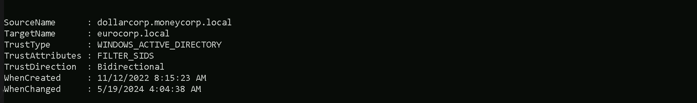
Since the above is a Bi-Directional trust, we can extract information from the eurocorp.local forest. We either need bi-directional trust or one-way trust from eurocorp.local to dollarcorp.moneycorp.local to be able to use the below command and enumerate eurocorp.local trusts.
Get-ForestDomain -Forest eurocorp.local | %{Get-DomainTrust -Domain $_.Name}

Notice the error above. It occurred because PowerView attempted to list trusts even for eu.eurocorp.local. Because external trust is non-transitive it was not possible!
Let’s say now I want to list only the external trusts in the moneycorp.local (our root forest)… (which is our is our parent domain).
Meaning, the command below will allow us to get the external trusts from the root forest of our domain, in our case we are in dollarcorp.moneycorp.local (which is a child domain from moneycorp.local)and with this command we can get only the external trusts instead of all the domains at the same time.
Get-ForestDomain | {Get-DomainTrust -Domain $_.Name} | ?{$_Trust_Attributes -eq "FILTER_SIDS"}
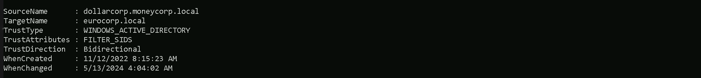